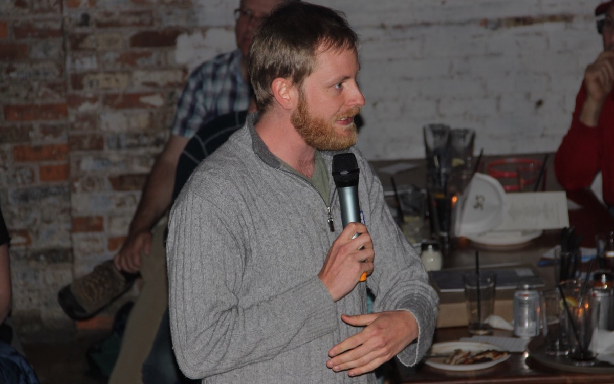

For two years, I taught at the Yale Summer Program in Astrophysics, a four-week residential research program for rising high school seniors. I led computing tutorials and observing labs. A unique challenge of this program was the diversity of programming experience among the students. I balanced the needs of the class by designing tutorials with challenge questions to keep the more advanced students interested and focusing individual attention on students who had never programmed before.
During graduate school, I have presented planetarium shows to thousands of members of the public at Yale's Leitner Family Observatory and Planetarium. After the shows, I help with telescope observations. If you've ever wondered how to find a constellation or see Saturn's rings, come to the planetarium!

I presented a public talk entitled "Mapping the Milky Way", about the GAIA mission and how we figure out the distance to the stars. Astronomy on Tap is a worldwide phenomenon where astronomers and members of the public come together over a beer or two and learn about space. Find an Astronomy on Tap near you.